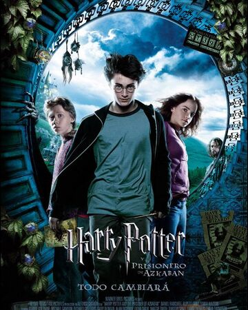

Universidad Nacional Autonoma de Mexico
Facultad de estudios superiores Aragon
Nombre: Raul Rodriguez Pichardo
Materia: Ingenieria de software
Grupo: 2660
Profesor: Hernandez Cabrera Jesus
Carrera: Ingenieria en computacion
Algunas de mis cosas favoritas... :u
Voy a hablar de mi libro favorito, pelicula favorita, y de mis 5 sitios web favoritos. Agarrense de su asiento y disfruten la funcion.
Mi libro favorito (resumen)
Es la historia de Itzel, una niña de 14 años que es enviada a aprender inglés a un pueblo en las montañas nevadas, por motivos de recuperación a raíz de la pérdida de su papá, pero ella es una persona rebelde que no quiere estar allí, más que la gente la rechaza por no poderse comunicar, en el colegio, hace una travesura, prendiendo la alarma de incendios, es llevada a la policía, donde le dan una tarjeta de conducta, a las personas que viven con ella les toca pagar una multa. Este libro es mi favorito, porque estan niña, siempre lucha por lograr lo que ella quiere, y aunque llego a el punto en el que ya no podia, y ya queria rendirse, a pesar de todas las adversidades, jamas se rindio, ademas de que a lo largo del libro, dan varios consejos de vida muy buenos.
Mi pelicula favorita (resumen)
Igual que en las dos primeras partes de la serie, Harry aguarda con impaciencia el inicio del tercer curso en el Colegio Hogwarts de Magia. Tras haber cumplido los trece años, solo y lejos de sus amigos, Harry se pelea con su bigotuda tía Marge, a la que convierte en globo, y debe huir en un autobús mágico. Mientras tanto, de la prisión de Azkaban se ha escapado un terrible villano, Sirius Black, un asesino en serie con poderes mágicos que fue cómplice de lord Voldemort y que parece dispuesto a borrar a Harry del mapa. Y por si fuera poco, Harry deberá enfrentarse también a unos terribles monstruos, los dementores, seres abominables capaces de robarle la felicidad a los magos y de eliminar todo recuerdo hermoso de aquellos que osan mirarlos. Lo que ninguno de estos malvados personajes sabe es que Harry, con la ayuda de sus fieles amigos Ron y Hermione, es capaz de todo y mucho más.
Mis 5 sitios web favoritos
1.-Asco de vida

Esta pagina aunque se escucha un poco deprimente, la verdad es que a mi me causa mucha risa, ya que en esta pagina, las personas cuentan pequeñas anecdotas de cosas tribiales que les suceden a lo largo de su dia, ademas de que puedes aprender las lecciones de otras personas sin cometer errores. Para visitar este sitio da clic a qui.
2.-Cultura Colectiva
Esta pagina tambien es de mis favoritas, ya que a qui siempre publican muchos articulos interensates de casi cualquier tema, me gusta porque siempre puedes aprender cosas nuevas y es una buena pagina para practicar la lectura. Para visitar este sitio da clic a qui.
3.-Google Keep
Google keep, es una herramienta que a lo largo de los dos ultimos semestres me ah ayudado bastante a estar super organizado con mis tareas, ademas de poner recordatorios y lo mejor de todo, es que puedes acceder a tus notas o recordatorios desde cualquier dispositivo, y todo esto se almacena en la nube. Para visitar este sitio da clic a qui.
4.-English Pod 365

Esta pagina es una de mis favoritas para practicas mi ingles, se trata de una pagina que tiene 365 podcast totalmente en ingles, lo mejor de todo, es que te explican el vocabulario, frases, contesxtos, etc. Esto con ayuda de 2 maestros que son muy buenos, ademas que tienen un muy buen acento. Para visitar este sitio da clic a qui.
5.-YouTube
Youtube, yo creo que es por mucho mi pagina favorita, es la pagina donde mas eh aprendido, de cualquier tema, como matematicas, manualidades, descargas, videojuegos, ocio, programacion, audiolibros y etc etc. Es la pagina en la que mas tiempo paso. Para visitar este sitio da clic a qui.
Regresar a la pagina principal